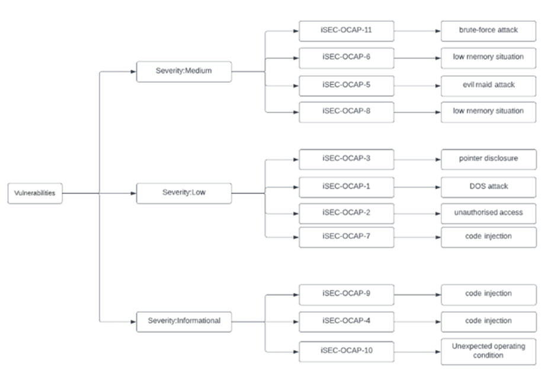
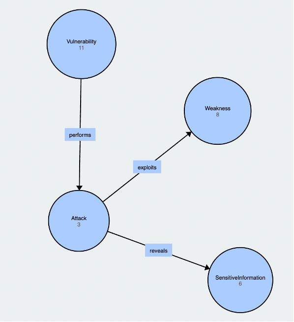
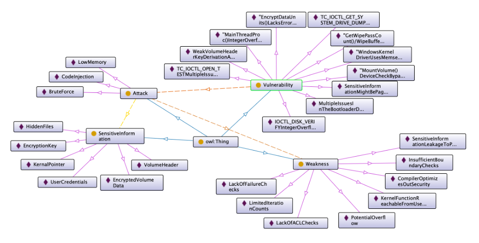

Initial Post :- Collaborative Discussion 1: UML flowchart
SSRF flaws occur whenever a web application is fetching a remote resource without validating the user-supplied URL. It allows an attacker to coerce the application to send a crafted request to an unexpected destination, even when protected by a firewall, VPN, or another type of network access control list (ACL).
As modern web applications provide end-users with convenient features, fetching a URL becomes a common scenario. As a result, the incidence of SSRF is increasing. Also, the severity of SSRF is becoming higher due to cloud services and the complexity of architectures.
The general idea is the following: If a functionality allows interaction with external resources (for example, uploading a picture to the application or redirection towards a page), then the attacker may try to send a request to the server in a way that the researched resource is internal to the server (files, services, resources available only in localhost) or to its network.
.png)
1. OWASP. (N.D.) A03:2021-Injection. Available from: https://owasp.org/Top10/A10_2021-Server-Side_Request_Forgery_(SSRF)/ [Accessed 19 Mar 2022]
2. VaaData May 2018 Understanding the Web Vulnerability Server-Side Request Forgery (1/2). Available from: https://www.vaadata.com/blog/understanding-web-vulnerability-server-side-request-forgery-1/ [Accessed 19 Mar 2022]
Response:- Yin Ping Lai
Attackers exploit the trust between the client-side and server-side to ascertain the information of the internal network, such as scanning ports, services, and files. Haibo L. (2019) proposed three underlying solutions to mitigate from being attacked by exploiting the SSRF vulnerability for web applications. One of the solutions is setting up a bypass strategy before processing requests. The web application will filter out malicious requests. During the development process, developers are recommended to implement the SSRF filtering method, but it is not only the responsibility of developers to prevent the SSRF attack. The network team is also accountable to set up filtering strategies to avoid the SSRF attack.
[1] H. Luo, "SSRF Vulnerability Attack and Prevention Based on PHP," 2019 International Conference on Communications, Information System and Computer Engineering (CISCE), 2019, pp. 469-472, doi: 10.1109/CISCE.2019.00109.
Response:- Kei Yiu Yvone Chan
Accompanying the increasing usage of cloud services like AWS, the damage brought by SSRF may also increase. SSRF can be launched to get the IAM role from the EC2 metadata and the attacker can then use the IAM credentials in AWS CLI (Hacking The Cloud, N.D.). Making things worse, Jabiyev et al (2021) pointed out that developers' awareness towards this vulnerability is generally limited according to their analysis of more than 60 SSRF vulnerability reports.
While a common solution to this vulnerability is by blacklisting URLs that point to internal services, it is not always done completely (Jabiyev et al, 2021). For example, this may be bypassed by using different encoding schemes and IPv6. DNS pinning may also happen such that the attacker can use a hostname that resolves to a private IP to bypass the defence (Jabiyev et al, 2021).
As these programmatic checks are valid when developers can predict the way the attacker behave, it will fail when an attack payload is delivered in an unexpected way (Jabiyev et al, 2021).
Hacking The Cloud. (N.D.) Steal EC2 Metadata Credentials via SSRF. Available from: https://hackingthe.cloud/aws/exploitation/ec2-metadata-ssrf/ [Accessed on 20 Mar 2022]
Jabiyev, B., Mirzaei, O., Kharraz, A. and Kirda, E. (2021) Preventing server-side request forgery attacks. Proceedings of the 36th Annual ACM Symposium on Applied Computing. 1626–1635.
Response:- Ian Wolloff
Good post In a traditional mainstream SSRF attack the hacker would trigger the remote server to make a connection to internal services within the perimeter of the infrastructure of the host. Or they would try to force the server to connect to external systems in order to leak sensitive data such as authorization tokens, usernames, passwords etc
One of the more interesting ways a SSRF can be leveraged it to use a SSRF weakness to attack the server itself that is hosting the application this involves forcing the application to make a request back to itself via the loopback network address (127.0.0.1 or localhost) as these addresses and hostnames would resolve back to the local device.
An example of how this exploit cloud work is an application may query locally hosted REST API endpoints via a HTTP request. The attacker could try to visit the API endpoints directly. But these may be secured behind application firewalls and Access control Lists (ACLs) preventing accesses from external addresses.
If the request came from the local machine the access controls and firewall rules would be bypassed as the request would appear to come from a trusted internal host (Anon)
Hacker-One Reports https://github.com/reddelexc/hackerone-reports/blob/master/tops_by_bug_type/TOPSSRF.md [Accessed 21.03.2022]
Calzavara Stefano (https://secgroup.dais.unive.it/wp-content/uploads/2020/03/more_server.pdf)
OWSAP https://cheatsheetseries.owasp.org/cheatsheets/Server_Side_Request_Forgery_Prevention_Cheat_Sheet.html [Accessed 21.03.2022]
PayLoad All the Things https://github.com/swisskyrepo/PayloadsAllTheThings/blob/master/Server%20Side%20Request%20Forgery/README.md
Response:- Cathryn Peoples(Tutor)
Firstly, please ensure that all acronyms are defined in full at the first point where they are used in a piece of text. I make this comment in response to your reference to 'SSRF'.
I would like to see your discussion taken further. What is a 'researched resource'? What will happen if the attacker sends a request to a server, and why are they able to carry out this request?
In relation to your model, why is there a flow from an Attacker to Client? What is the significance of the notation that you have used in this model?
Best wishes,
Cathryn
Collaborative Discussion 2: Cryptography case study: TrueCrypt
TrueCrypt is a renown disk encryption software, which was discontinued as a result of the report from the first phase of the audit which was released on April 14, courtesy of security engineers Andreas Junestam and Nicolas Guigo, working under the banner of iSEC Partners. The two of them examined TrueCrypt's source code in detail, after reviewing the bootloader and source code they found a total of 11 vulnerabilities. None of them by themselves were bad enough to consider avoiding TrueCrypt altogether, but they're all worth patching. A second report will follow with a detailed analysis of the encryption itself. Most criticisms the authors levied at TrueCrypt involved the quality of the source code, such as how comments were added or what system functions were used (or not used). One major issue was how compiling TrueCrypt from source required the use of an older Windows build environment that's noticeably out of date.
This last issue was raised before by others who attempted to build TrueCrypt from source, to see if the resulting binaries matched the ones distributed on TrueCrypt's site. They were only able to do this after a good deal of work, and by using a shockingly old version of Microsoft Visual C++ released in 1993.
Why TrueCrypt was created in such a manner could inspire endless debate, especially since its original creators and development team maintain a presence at least as shadowy as that of bitcoin's Satoshi Nakamoto.
However, the report doesn't go into how an end-user could protect himself from any potential exploits detailed in the report, but the authors note that many of the issues in question can be mitigated by following directives in the documentation. Using a long password, for instance, is strongly recommended; ditto using full-system encryption for scenarios where decrypted data might be written to the page file.
TrueCrypt is a storage environment that lacks strong security against Vulnerabilities as TrueCrypt encrypts data before writing it to a non-volatile data storage device and then decrypts it again after it has been read. I'd rather recommend a reliable storage environment such as VeraCrypt.
The security model used by the TrueCrypt developers envisages a very narrow scope of application for the software. In addition, the developers explicitly point out that TrueCrypt does not generally possess the following characteristics and functions:
1. Protection of data on an IT system that an attacker can manipulate or control in some manner, or which the attacker can monitor.
2. Protection of data on an IT system to which an attacker has gained access before, during or directly after TrueCrypt has been executed.
3. Protection of the integrity or authenticity of data.
4. Encryption of data in volatile memory.
5. Protection of information about changes to data on encrypted data storage devices or in encrypted volumes.
6. Protection of data flows outside of the TrueCrypt encryption, e.g. the transmission of data over computer networks.
Alex Balducci, Sean Devlin, and Tom Ritter. Cryptographic Review. Version 1.0. Open Crypto Audit Project, Mar. 2015. url: https : //opencryptoaudit.org/reports/TrueCrypt_Phase_II_NCC_OCAP_final.pdf.
Andreas, J. & Nicolas, G. (2014) Open Crypto Audit Project TrueCrypt Security Assessment.
Junestam, A. & Guigo, N., 2014. Open Crypto Audit Project - Security Assessment, s.l.: iSECpartners Inc.
Response:- Yin Ping Lai
Hi Babatunde,
Thank you for your sharing.
I found your post excellent in discussing the problems for the TrueCrypt software deeply and very informative.
I also saw this post suggest an alternative such as the VeraCrypt. However, the post didn’t mention it much. If I were you, I would make the comparison between TrueCrypt and VeraCrypt. To demonstrate why considering the VeraCrypt software would be a better choice than the TrueCrypt. I found a post comparing the VeraCrypt and TrueCrypt software. There are serval significant differences among them. For example, it compares the installation speed for an encrypted disk, the prevention of brute force attacks, and community support (CyberYozh security group. N.D.). In addition, I think it is better to list out all vulnerabilities with the ontology diagram because it can represent them clearly and easily read.
[1] CyberYozh security group, N.D., “VeraCrypt. VeraCrypt vs TrueCrypt” [online] Available at: https://book.cyberyozh.com/veracrypt-veracrypt-vs-truecrypt/. [Accessed on 26 May 2022].
Collaborative Discussion 2: Cryptography case study: TrueCrypt By Pavendran
According to Junestam & Guigo (2014), 11 vulnerabilities were discovered (4 medium, 4 low, and 3 informational). Even while none of the vulnerabilities are severe/high, some of them are enough to conclude that TrueCrypt did not meet the necessary standards for secure coding.
For example, TrueCrypt uses a standard key derivation algorithm (PBKDF2) and relay on developers to specify an iteration count that influences the computational cost of deriving a key from a password. TrueCrypt uses either 1000 or 2000 iterations, depending on the hash function and use case. In all cases, the iteration count is insufficient to prevent even modestly complicated password guessing attempts.
If an attacker obtains access to an encrypted TrueCrypt volume and uses an offline brute-force and/or dictionary attack to recover the key used to encrypt the volume header, the volume can be decrypted.
Due to the above findings, as well as the fact that TrueCrypt has been discontinued since 2014, I would not recommend it to anyone.
Here is an ontology diagram that shows vulnerabilities by their severity and negative impacts on users.

Junestam, A. & Guigo, N. (2014) Open Crypto Audit Project Truecrypt Security Assessment.Available from: https://opencryptoaudit.org/reports/iSec_Final_Open_Crypto_Audit_Project_TrueCrypt_Security_Assessment.pdf [Accessed 7 May 2022]
Collaborative Discussion 2: Cryptography case study: TrueCrypt Response to Pavendran Wimalendran
I must really commend you for a job well done Pavendran, you've developed a very nice point in your article.
This shows that, TrueCrypt is a storage environment that lacks strong security against Vulnerabilities as TrueCrypt encrypts data before writing it to a non-volatile data storage device and then decrypts it again after it has been read.
In Addition, Your ontology diagram that shows vulnerabilities by their severity and negative impacts on TrueCrypt users is really explicit, aesthetically clear to the reader and educating.
I say thank you for sharing this wonderful wealth of knowledge.
Collaborative Discussion 2: Cryptography case study: TrueCrypt - By Yin Ping Lai
The TrueCrypt suite was one of the well-known disk encryption tools in the PC world, but it was discounted in 2014. Andreas J. and Nicolas G. (2014) reviewed the bootloader and the Windows kernel driver source code and discovered a branch of security vulnerabilities from the TrueCrypt suites. In addition, the analysis report also revealed the TrueCrypt source code had a bad code quality and standard, which was too hard to maintain.
From the analysis report, the most severe attack is the problem of using the weak derivation algorithm to encrypt the volume header. It used the PBKDF2 algorithm to encrypt the TrueCrypt header, and developers declared a few iteration counts during the encryption process. As a result, the attacker can exploit this weakness to acquire the encrypted TrueCrypt volume and extract data from it.
Below Ontology figures show the relationship, weakness, and severity of those identified vulnerabilities.
If I get a chance to recommend it to my friend someday, I will add a caveat: "All your data will be exposed eventually and should consider alternative option instead" message for them. Moreover, as we can see, there are many ways to decrypt and acquire data without authorized access from Pranshu B. (2015)’s post. Consequently, TrueCrypt is not a secure data encryption tool for protecting your data. It has chances of data exposure, and we should not use it anymore.
 
[1] Andreas, J. & Nicolas, G. (2014) Open Crypto Audit Project TrueCrypt Security Assessment. [Online] Available from: https://opencryptoaudit.org/reports/iSec_Final_Open_Crypto_Audit_Project_TrueCrypt_Security_Assessment.pdf. [Accessed on 8 May 2022].
[2] Pranshu B. (2015) TrueCrypt Security: Securing Yourself against Practical TrueCrypt Attacks. [Online] Available from: https://resources.infosecinstitute.com/topic/defeating-truecrypt-practical-attacks-truecrypt-security/. [Accessed on 9 May 2022].
Collaborative Discussion 2: Cryptography case study: TrueCrypt Response to Yin Pai Ling
You've done a very great work Yin, by puting all these pieces together you've created a nice content I must commend you.
In Addition, According to the author, TrueCrypt does not guaranty physical security as stated In its documentation that "TrueCrypt is unable to secure data on a computer if an attacker physically accessed it and TrueCrypt is used on the compromised computer by the user again (this does not apply to a common case of a stolen, lost, or confiscated computer). The attacker having physical access to a computer can, for example, install a hardware/software keylogger, a bus-mastering device capturing memory, or install any other malicious hardware or software, allowing the attacker to capture unencrypted data (including encryption keys and passwords), or to decrypt encrypted data using captured passwords or encryption keys. Therefore, physical security is a basic premise of a secure system. Attacks such as this are often called "evil maid attacks".
This actually shows that, As the authors of TrueCrypt mention, Using TrueCrypt is not secure as it may contain security issues . Also, TrueCrypt documentation states that "TrueCrypt cannot secure data on a computer if it has any kind of malware installed. Malware may log keystrokes, thus exposing passwords to an attacker."
Malware". TrueCrypt Documentation. TrueCrypt Foundation. Archived from the original on 13 September 2012. Retrieved 24 May 2014.
Physical Security". TrueCrypt Documentation. TrueCrypt Foundation. Archived from the original on 13 September 2012. Retrieved 24 May 2014.
Schneier, Bruce (23 October 2009). ""Evil Maid" Attacks on Encrypted Hard Drives". Schneier on Security. Retrieved 24 May 2014.
Collaborative Discussion 2: Cryptography case study: TrueCrypt Summary Post
On 28 May 2014, the TrueCrypt official website, truecrypt.org, began redirecting visitors to truecrypt.sourceforge.net with a HTTP 301 "Moved Permanently" status, which warned that the software may contain unfixed security issues, and that development of TrueCrypt was ended in May 2014, following Windows XP's end of support. The message noted that more recent versions of Windows have built-in support for disk encryption using BitLocker, and that Linux and OS X had similar built-in solutions, which the message states renders TrueCrypt unnecessary. The page recommends any data encrypted by TrueCrypt be migrated to other encryption setups and offered instructions on moving to BitLocker. The SourceForge project page for the software at sourceforge.net/truecrypt was updated to display the same initial message, and the status was changed to "inactive."The page also announced a new software version, 7.2, which only allows decryption.
Initially, the authenticity of the announcement and new software was questioned. Multiple theories attempting to explain the reason behind the announcement arose throughout the tech community. According to the author, TrueCrypt does not guaranty physical security as stated In its documentation that "TrueCrypt is unable to secure data on a computer if an attacker physically accessed it and TrueCrypt is used on the compromised computer by the user again (this does not apply to a common case of a stolen, lost, or confiscated computer). The attacker having physical access to a computer can, for example, install a hardware/software keylogger, a bus-mastering device capturing memory, or install any other malicious hardware or software, allowing the attacker to capture unencrypted data (including encryption keys and passwords), or to decrypt encrypted data using captured passwords or encryption keys. Therefore, physical security is a basic premise of a secure system.
Additionally, sequel to the feedback I have gotten from my peers many suggestions has been made in their posts, I will also propose alternate solutions, such as VeraCrypt or BitLocker.
TrueCrypt stores its keys in RAM; on an ordinary personal computer the DRAM will maintain its contents for several seconds after power is cut (or longer if the temperature is lowered). Even if there is some degradation in the memory contents, various algorithms can intelligently recover the keys. This method, known as a cold boot attack (which would apply in particular to a notebook computer obtained while in power-on, suspended, or screen-locked mode), has been successfully used to attack a file system protected by TrueCrypt.
Gibson, Steve (5 June 2014), TrueCrypt, the final release, archive, Gibson Research Corporation, retrieved 1 August 2014.
Ratliff, Evan (29 April 2016). "The Next Big Deal". Retrieved 1 May 2016.
"Version History" (PDF). TrueCrypt User's Guide, version 3.1a. TrueCrypt Foundation. 7 February 2005. Archived (PDF) from the original on 30 December 2008. Retrieved 2 March 2017.
Tc-foundation (28 May 2014). "TrueCrypt project page". SourceForge. Archived from the original on 30 May 2014. Retrieved 30 May 2014.
Goodin, Dan (28 May 2014), ""TrueCrypt is not secure," official SourceForge page abruptly warns", Ars Technica, Condé Nast, retrieved 28 May 2014.
Goodin, Dan (29 May 2014), "Bombshell TrueCrypt advisory: Backdoor? Hack? Hoax? None of the above?", Ars Technica, Condé Nasta, retrieved 29 May 2014.